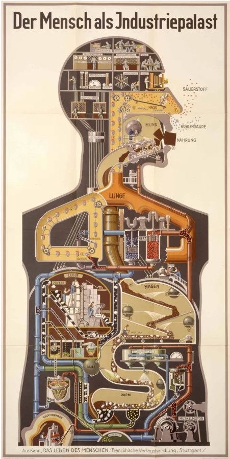
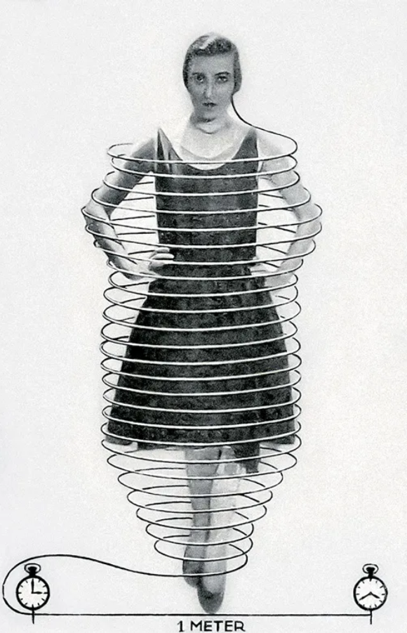
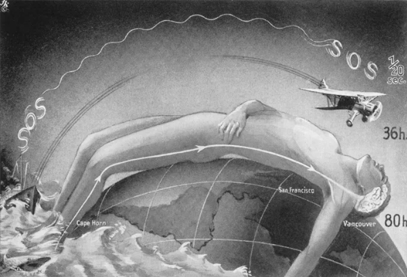
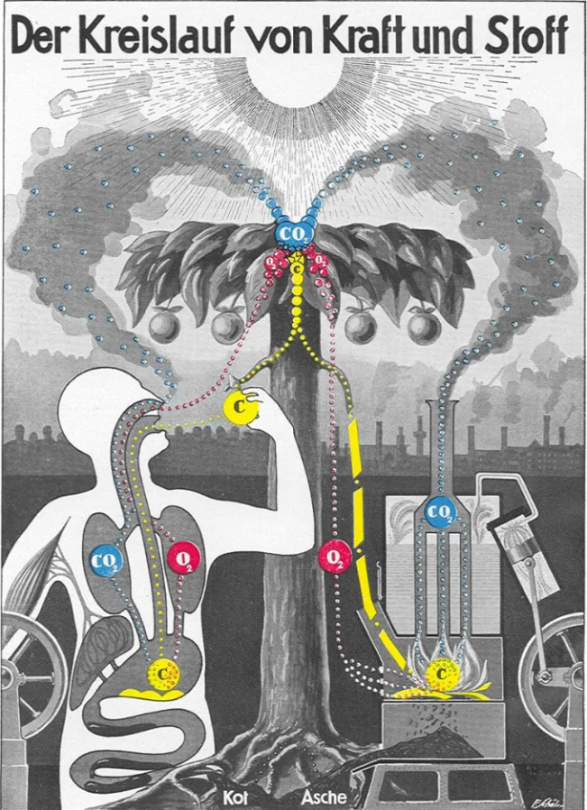
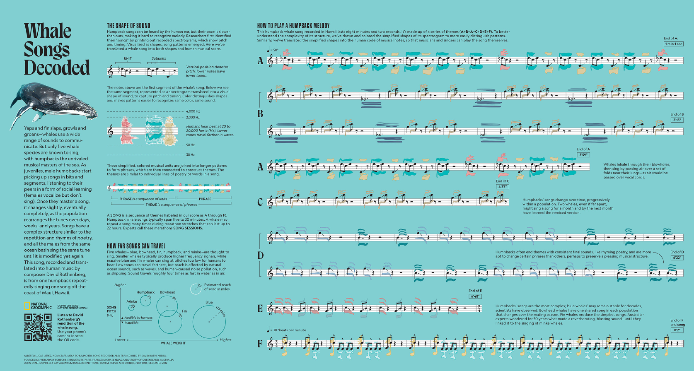
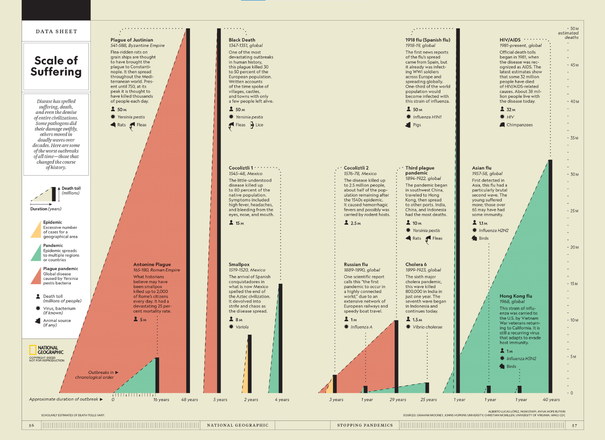
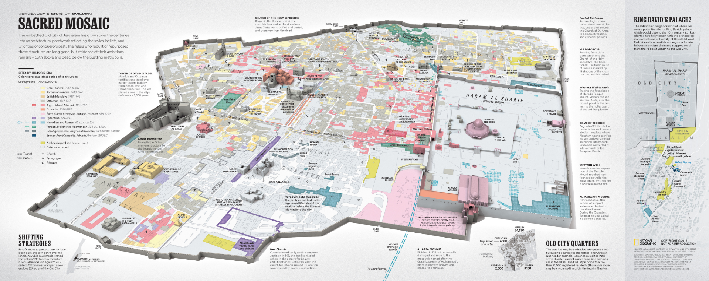
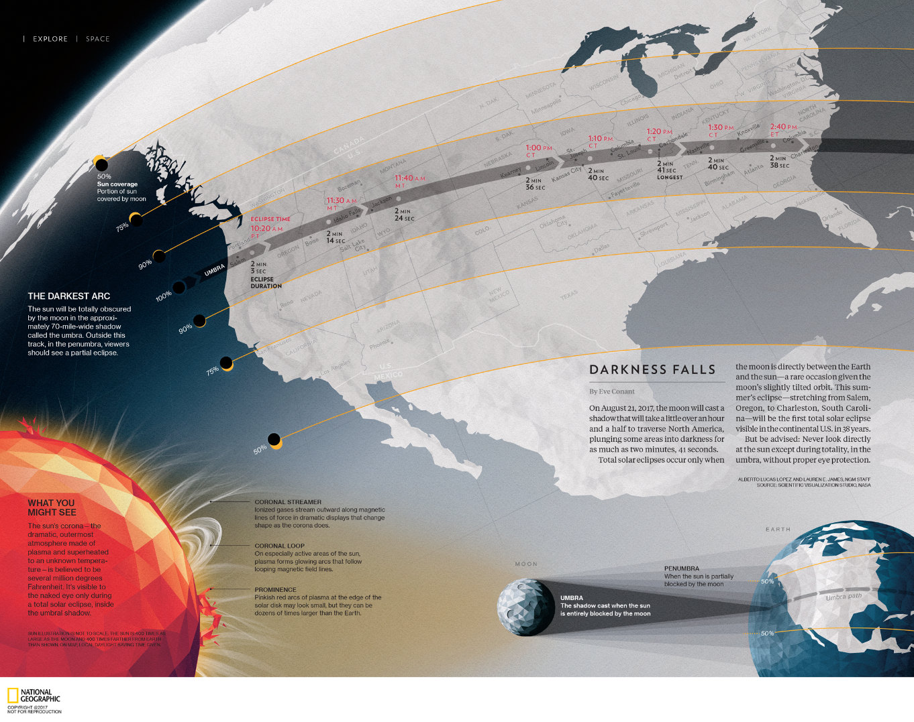

Esta página busca mostrar el trabajo infográfico de dos personas relevantes en esta disciplina, por un lado, Fritz Kahn, un 'transformer' del siglo XX, y, por otro lado, Alberto Lucas López, un infografista del siglo XXI.
Para contextualizar, 'transformer' es un término que significa especialista en Aufklärung, un término alemán que refiere a la ilustración y a explicar o aclarar. Los 'transformer' fueron relevantes en le siglo XX, y son un antecedente de los infografistas de hoy en día, quienes se desempeñan principalmente de manera digital.
FRITZ KAHN
Fritz Kahn (1888–1968) fue un médico alemán de ascendencia judía, pedagogo, autor de textos de divulgación científica y pionero de la representación gráfica de la información.
Obligado a salir de Alemania por los nazis, quienes prohibieron y quemaron sus libros, Kahn emigró finalmente a Estados Unidos para continuar con el trabajo de su vida.
En obras como Man as Industrial Palace (El hombre como palacio industrial), observamos cómo Kahn desarrolla vívidas metáforas visuales para desmitificar la ciencia y cómo sus conceptos han influido en generaciones de ilustradores científicos, especialistas de la comunicación visual y artistas infográficos hasta hoy.
Aquí hay algunos de sus trabajos infográficos más destacables:

'Man as Industrial Palace' (1926).

‘Daily hair growth' (1929). Muestra gráficamente el crecimiento del pelo que produce el cuerpo humano en un día. Si el crecimeinto se concentrara en un solo pelo, mediría 100 pies y crecería una pulgada por minuto.

‘The speed of thought — overtaken by technology!’ (1939).

‘The cycle of matter and energy’ (1926).
ALBERTO LUCAS LÓPEZ
Alberto Lucas López es un infografista, periodista y artista español, que está al frente del departamento de Nuevas Narrativas de National Geographic. Su definición esencial de infografía es “periodismo con mayúsculas”. Recibió más de 50 premios internacionales y 12 medallas Malofiej, el premio considerado como el Pulitzer de la Infografía. Impacto emotivo, estética y mensaje claro, las claves de su trabajo.
A continuación, se encuentran algunos de sus trabajos infográficos más destacables:

The print version of the Whale Songs Decoded project included in the May 2021 issue of National Geographic Magazine.

Past Pandemics, August 2020 (Filed under National Geographic, History, People).

Under Jerusalem, December 2019 (Filed under National Geographic, History).

Eclipse, August 2017 (Filed under National Geographic, Space).